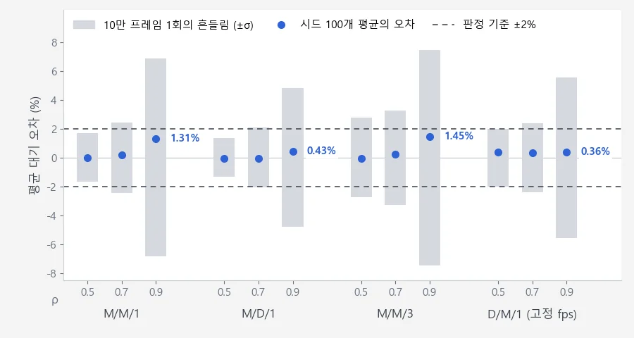

시뮬레이터의 답을 믿기 전에
무엇을 확인해야 했나
프레임 대기열 시뮬레이터는 설정을 넣으면 언제나 숫자를 냅니다. 사건 순서를 하나 잘못 처리하거나 작업자 수를 잘못 세어도 결과 표는 그럴듯하게 나옵니다. "몇 분 뒤 메모리가 넘친다"는 답을 믿으려면, 그 답을 낸 도구가 맞는지부터 확인해야 했습니다. 조금 느린 단계가 왜 끝없이 쌓이는지는 화면 그리기가 촬영을 따라가지 못할 때에 적었습니다.
답을 아는 경우: 카메라 바로 뒤 '전부 처리' 단계
대기행렬 이론에는 평균 대기를 계산하는 식이 있습니다. 다만 도착이 단순하고 대기열에 끝이 없을 때만 맞습니다. 앱에서 이 조건을 만족하는 곳은 카메라 바로 뒤에서 모든 프레임을 줄 세우는 단계입니다. 도착이 카메라 그대로(포아송 또는 고정 fps)이고, 버리는 프레임이 없습니다.
// 카메라 바로 뒤 '전부 처리' 단계. s: 평균 처리 시간, c: 작업자 수, ρ = λ·s/c
// ca2, cs2: 도착 간격 · 처리 시간의 변동계수 제곱 (포아송 1, 고정 fps 0, 지수 1)
M/G/1 Wq = ρ·s·(1+cs2) / (2·(1-ρ)) // 포아송 도착, c = 1. 정확식
D/M/1 σ = exp(-(1-σ)/ρ), Wq = σ·s/(1-σ) // 고정 fps + 지수 처리, c = 1. 정확식
M/M/c Wq = C(c, λ·s) / (c/s - λ) // 포아송 + 지수 처리. 정확식 (C: Erlang C)
G/G/1 Wq ≈ ρ/(1-ρ) · (ca2+cs2)/2 · s // 그 밖, c = 1. Kingman 근사
G/G/c Wq ≈ Wq(M/M/c) · (ca2+cs2)/2 // 그 밖, c > 1. Allen-Cunneen 근사앞 단계의 출력을 받는 단계는 도착 간격의 분포를 식으로 쓸 수 없습니다. 버리는 정책은 대기열 길이에 상한이 생겨 위 식의 가정과 다릅니다. 그래서 이런 단계에는 분석식을 내지 않고 시뮬 값만 보여 줍니다.
무엇을 비교하나: 평균 대기
위 식들이 직접 주는 값은 대기열에서 기다린 평균 시간(Wq)입니다. p99 같은 꼬리 값은 이 식들로 나오지 않습니다. 그래서 시뮬에서도 처리를 시작하기 전까지 기다린 시간의 평균을 꺼내 같은 양끼리 비교합니다. 처리 시간을 더한 전체 지연으로 비교하면 오차가 묽어집니다. M/D/1 ρ 0.5 에서 평균 대기는 5 ms, 처리는 10 ms 라서, 대기에서 1% 틀려도 전체 지연에서는 0.33% 로 보입니다.
통과 기준: 1회가 아니라 시드 100개 평균
기준은 "ρ 0.9 이하에서 평균 대기 오차 2% 이내"입니다. 10만 프레임을 한 번 돌려 비교하면 될 것 같지만, 시드만 바꿔도 ρ 0.9 의 평균 대기가 1회 σ 4.8~7.5% 로 흔들립니다. 대기 시간은 앞 프레임의 대기에 이어지므로, 10만 프레임이라도 서로 독립인 표본은 훨씬 적습니다. 1회 결과로는 2% 를 가릴 수 없습니다.
그래서 같은 설정을 시드 100개로 돌려 평균을 내고, 그 평균의 오차로 판정했습니다. 분석식 4종(M/M/1 · M/D/1 · M/M/3 · D/M/1) × ρ 0.5 · 0.7 · 0.9, 평균 처리 시간은 모두 10 ms 입니다.

결과
12가지 경우 모두 기준 안이었습니다. 가장 큰 오차는 M/M/3 ρ 0.9 의 1.45%, 다음이 M/M/1 ρ 0.9 의 1.31% 였고, ρ 0.7 이하는 모두 0.36% 이내였습니다. ρ 0.9 에서는 100개를 평균해도 σ/√100, 곧 0.48~0.75% 의 흔들림이 남습니다.
같은 비교를 작은 규모(20만 프레임 × 시드 3, 3% 이내)로 단위 테스트에도 넣어, 저장소에 올릴 때마다 CI 가 다시 돌립니다. 앱의 도움말에서도 시드 10개로 약 10초 만에 같은 확인을 돌려 볼 수 있습니다.
어긋나야 정상인 곳
- ρ ≥ 1: 식의 답은 무한대이지만, 유한한 시간을 돌린 시뮬은 언제나 유한한 숫자를 냅니다. 그래서 실행 전에 ρ 부터 보고 "끝없이 쌓이는 단계"로 표시하며, 분석식과 비교하지 않습니다.
- ρ 가 1 에 가까울 때: 대기가 1/(1−ρ) 로 커지고 1회 흔들림도 커집니다. 1회 σ 는 ρ 0.5 에서 1.3~2.8%, ρ 0.9 에서 4.8~7.5% 입니다. 기준은 ρ 0.9 까지만 두고, 결과 표의 1회 값은 이 폭 안에서 어긋날 수 있습니다.
- 근사식: 고정 fps 에 지수 처리이면 Kingman 근사는 ρ 0.5 에서 5.0 ms, D/M/1 정확식은 2.55 ms 입니다. ρ 0.9 에서도 45.0 ms 대 41.8 ms 입니다. 도착이 고르면 근사가 대기를 크게 잡으므로, 결과 표에서 '근사' 대비 음수 오차는 엔진 오류가 아닙니다. 고정 fps 는 흔한 경우라 D/M/1 정확식으로 따로 맞춰 봤고, 오차는 0.36% 이내였습니다.
- 분석식이 없는 곳(버리는 정책, 뒤 단계): 고정 간격 · 고정 처리 시간에서 엔진과 따로 짠 단순 루프와 비교해, 정책 5가지 모두 처리 · 버림 · 최대 대기 수가 같은지 테스트로 확인합니다.
정리
측정 도구의 결과를 믿기 전에, 답을 아는 경우에서 도구부터 맞춰 봅니다. 기준을 정할 때는 비교할 양과 한 번 돌릴 때의 흔들림을 함께 봅니다. 흔들림이 기준보다 크면 1회 비교는 통과도 실패도 말해 주지 않습니다. 어디서 어긋나야 정상인지도 미리 적어 둡니다. 그래야 근사와의 차이를 버그로 착각하지 않고, 정확식과의 차이는 그냥 넘기지 않습니다.
직접 돌려 보려면 프레임 대기열 시뮬레이터의 도움말에서 '정확도 확인 실행'을 누르거나, 저장소에서 node tools/accuracy.mjs 를 실행하면 됩니다.
수치는 모두 합성 설정(평균 처리 10 ms)으로 저장소의 스크립트를 돌린 결과이고, 설비 측정값이 아닙니다.